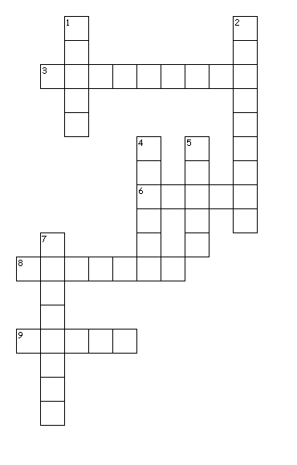

This Week: Isaiah 1:1, 10-20 and Psalm 50:1-8, 22-23 or Genesis 15:1-6 and Psalm 33:12-22, Hebrews 11:1-3, 8-16, Luke 12:32-40
Elementary School Pew-work
Unscramble the missing words:
My little group of disciples, don't be raafid___________! Your athFer___________ wants to give you the dokgmin___________. Sell what you have and give the oynem___________ to the poor. Make yourselves meyboagsn_______________ that never wear out. Make sure your treasure is safe in nhevea, where thieves cannot steal it and hsomt___________ cannot destroy it. Your thare___________ will always be where your etureras___________ is.
What
does God want to give
us?
__________________________________________________________________________
What
does God want us to
give?
__________________________________________________________________________
|
 Created by Puzzlemaker at DiscoverySchool.com |
Across
3. for carrying coins
6. not sleeping
8. a special feast
9. sources of light
Down
1. a sound on the door
2. Jesus' students
4. where treasure is safe
5. prepared
7. people who serve others
|
Next week: Isaiah 5:1-7 and Psalm 80:1-2, 8-19 or Jeremiah 23:23-29 and Psalm 82, Hebrews 11:29-12:2, Luke 12:49-56